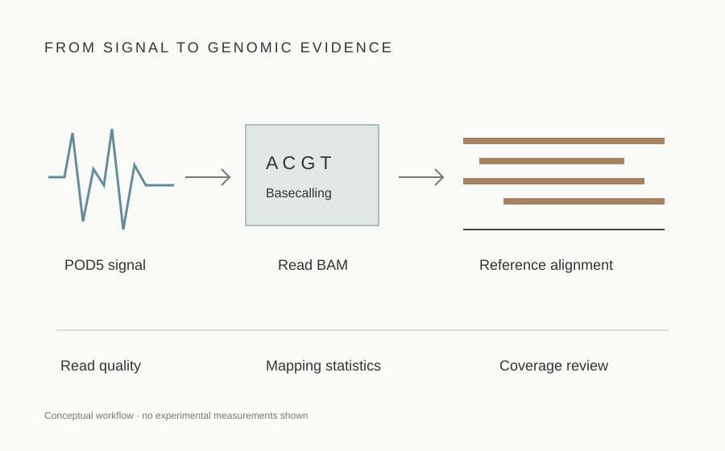

PROJECT 04 / COMPUTATIONAL WORKFLOW
Genome Sequencing.
From raw signal to aligned reads.
A computational analysis workflow for nanopore sequencing data: organize inputs, call bases, map reads and review data quality before designing downstream studies.
Workflow development · Research and training

How the work progresses4 stages · workflow diagram and command templates
Adapted from the source tutorial’s computational sections: setup, basecalling, alignment and coverage review.
- 01
Prepare inputs
Retain POD5 signal, sample identifiers and the reference assembly. For targeted analysis, prepare assembly-matched BED intervals.
- 02
Call bases
Use a chemistry-compatible Dorado model. HAC provides a faster route; SUP is a separate accuracy–compute choice.
- 03
Map reads
Align basecalled reads to GRCh38, then sort and index the alignments.
- 04
Review coverage
Inspect mapping statistics and depth across the genome or the intended target intervals.
Outputs: basecalled BAM, sorted alignment BAM and index, plus mapping and coverage reports.
Optional downstream research
The source mentions variant analysis, HLA and pharmacogene investigation, and possible noncoding-effect modeling. These are follow-on ideas, not a completed analysis pipeline or laboratory result.
Example command templates
Commands are documentation templates and have not been run on laboratory data. The alignment step uses Dorado’s supported BAM input rather than passing BAM directly to standalone minimap2.
# Templates only: choose a compatible installed model and real paths.
dorado basecaller /path/to/compatible_model /path/to/pod5/ > calls.bam
dorado aligner ref/GRCh38.fa calls.bam | samtools sort -o aligned.bam -
samtools index aligned.bam
samtools flagstat aligned.bam > mapping-summary.txt
samtools stats aligned.bam > alignment-stats.txt
# Targeted coverage, if a matching BED is available:
mosdepth --by panels/targets.bed coverage aligned.bamTools & ResourcesExpandable software and reference notes
Dorado — basecalling and alignment
Convert POD5 signal to sequence calls. Its aligner accepts existing basecalls in HTS formats and uses minimap2 internally. Record the exact model and software version.
Official documentation ↗SAMtools — alignment handling and statistics
Sort and index alignments; summarize mapped reads and alignment statistics. Keep read filters and reference metadata with every report.
Official manual ↗mosdepth — interval depth
Summarize depth over BED intervals and assess regions with insufficient coverage. Match chromosome names and assembly between BAM and BED.
Project documentation ↗Reference FASTA and target BED
Record the assembly accession, contig set and file checksums. Verify target coordinates before comparing interval-level results.
Evaluation MetricsExpandable quality and reproducibility checks
Read yield and length
Report total reads, sequenced bases, read-length distribution and read N50; retain the filtering policy.
Basecall quality
Summarize the quality distribution alongside the Dorado model, chemistry and version. Quality scores do not establish variant accuracy.
Mapping performance
Report mapped-read fractions, primary/secondary alignment handling and mapping-quality filters. Interpret unmapped reads rather than applying one universal cutoff.
Coverage depth and breadth
Distinguish mean depth from the fraction of bases reaching a stated threshold. Review low-coverage targets individually; report denominators and filters.
Target enrichment, when applicable
Compare on-target yield and target coverage against a clearly specified baseline. Enrichment depends on target size, molecule length and run conditions.
Reproducibility
Retain sample/run identifiers, reference checksum, model, software versions, commands and logs. No project-specific measurements are available on this page.
Source & scope.
Workflow overview adapted in summary from How I sequenced my genome at home, especially sections 6–7. Implementation details were checked against the Dorado documentation and SAMtools manual. Reviewed 2 November 2026.
This page presents a proposed computational workflow. Sequencing, clinical validation and downstream variant interpretation have not been demonstrated here. Coverage alone does not establish diagnostic validity.
Related project: AI in Genomics →